User Guide
 Contents
Contents
Classes 11
Attributes 13
Operations 18
Persistents 34
Project and section operations 39
Opening an existing project 42
The System Menu 55
About Marten 55
Preferences 56
Services 57
Hide Marten 57
Hide Others 57
Show All 58
Quit Marten 58
The File menu 58
New 58
Open 58
Close 58
Save 59
Save As 59
Revert 59
Import 59
Export 60
Update 60
Page Setup 60
Print 60
The Edit menu 60
Undo 61
Redo 61
Cut 61
Copy 61
Paste 61
Clear 61
Duplicate 62
Select All 62
Find 62
Spelling 62
The Operations menu 63
Method 63
Primitive 64
Constant 64
Match 64
Persistent 64
Instance 65
Get 65
External Get 65
Set 65
External Set 65
Local 66
Evaluate 66
Run Mode 66
The Controls menu 68
Control menu commands that only apply to operations 68
Control menu commands that affect roots and terminals 69
A menu command for toggling activation conditions 70
Control menu commands for controls on operations and the output bar 70
The Window menu 71
Information 71
Sections 73
Classes 73
Persistents 73
Methods 73
Attributes 73
Errors 74
Stack 74
The Projects window 77
Opening the Projects window 78
The Sections window 80
Opening the Sections window 82
Removing a section from the project 83
The Universal Methods window 84
Opening a Universal Methods window 85
Creating a universal method 85
Renaming a universal method 86
The Persistents window 91
Opening the Persistents window 91
About names for persistents 92
The Class Methods window 93
Opening the Class Methods window 94
About names of class methods 94
The Class Attributes and Instance Attributes windows 95
Opening an Attributes window 96
The Case window 98
Using operations in a Case window 100
Effect of opening operations by double-clicking 101
Working with roots and terminals 103
Using controls 108
Using locals 109
Clipboard functions on operations 113
Using cases 114
Marten language elements
Persistents
The Marten software development environment provides an implementation of the Prograph computer language created by Philip Cox and others (cf. "Prograph-A Step Towards Liberating Programming From Textual Conditioning"; Cox, Giles, and Pietrzykowski in 1989 IEEE Workshop on Visual Languages) . Prograph is an object-oriented graphical programming language where the software code is created from diagrams wherein language element icons are connected together. Text is used solely to name certain elements of the language.
A Marten program can be made up of the following elements.
Projects and sections which are files that store Marten source code.
- Classes and class-related elements such as attributes and class methods.
- Universal methods which are methods independent of any class.
- Operations, which are the units of execution in Marten. These can be user- defined or packaged with Marten. Operations can have associated controls that provide control flow.
- Data consisting of simple data types and class instances.
Persistents, which provide global access to data values.
 Projects and sections
Projects and sections
Sections are files that store Marten source code. A section allows you to save functionally-related Marten code in one place so that you can easily reuse that code in different projects.
A Marten project is represented by two files, the project file and the project application. When a Marten project is created, an actual executable for that project is immediately created on disk. This executable is referred to as the project application. It will be launched each time the project is opened and communicate with the editor. In addition to the project application, a project file is created that contains a list of the sections for the project, a list of libraries to be loaded with the project, and finally a list of resources (icons, strings, images, etc.) that are stored in the project application.
The currently open projects of a Marten development session are listed in the Projects window.
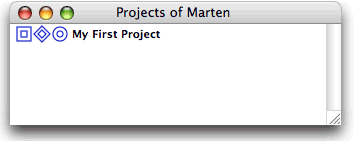
There are three icons preceding each project name listed. Each icon represents a different component of a Marten project.
By double-clicking the middle icon, you may view the sections of a project in a Sections window.
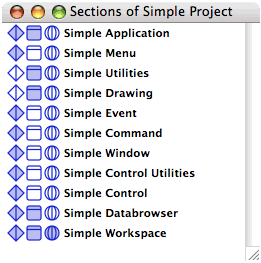
The three icons that precede each section name represent three types of top-level Marten elements:
|
|
|
|
|
|
|
|
A section usually contains functionally-related elements. For example, the set of classes that implement an evolutionary tree, such as "leaves" and "branches", would be most usefully stored in the same section. When a section is included in a project, its classes, universals, and persistents become available to your application.
|
For details on working with sections, see The Sections window. |
Classes
In an object-oriented language such as C or Prograph, a class is the language element that provides the definition of properties and actions for a specific type of object. The properties and actions are called the class members. In C, a class may have member variables to provide definitions of the properties and member functions to provide definitions of the actions. In Prograph, these types of members are called attributes and methods repectively. A Marten class therefore contains two types of members:
Attributes, which define the properties of an object of the class
Class methods, which are the actions that can be performed against objects of the class.
An actual object of a class is referred to as an instance of that class.
For example, consider a class that provides a description or model of a person. Attributes of the class could include the name and age of the person and the class could include methods for setting the name and getting the age.
You view the classes of an individual section in a Classes window.
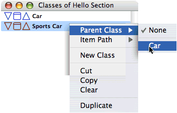
Each class in a section is represented by three icons:
|
|
Provides access to the Instance attributes. |
|
|
Provides access to the Class methods. |
|
|
Provides access to the Class attributes. |
Inheritance lets you designate a class as a subclass of existing class. The resulting class, the subclass, inherits all attributes and methods of the parent class, its immediate ancestor. The parent may, in turn, have inherited attributes and methods from a parent class. A subclass can have attributes and methods in addition to those it inherited. Because Marten supports only single-inheritance, a subclass can only inherit from a single parent class.
|
For information on class methods, see Class methods. For details on working with classes in the Marten Editor, see The Classes window. |
Attributes
An attribute is a member variable of a class. It is a property of an instance of the class, a sort of "noun". Attributes are named and provide access to values which can be any data type. The definition of an attribute for a class also allows for the storage of a default value to be supplied to a newly created instance. Marten provides two types of attributes.
Class attributes
A Class attribute has one value for the class as a whole; its value is shared by all instances of the class. You can view class attribute definitions in a Class Attributes window.
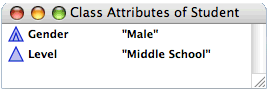
An attribute icon is displayed with its name and its default value to the right of the name.
The two types of icon indicate whether the attribute is defined in this class or inherited from a parent class.
|
|
|
|
|
- For a given class, each attribute in the class must have a unique name.
|
For information on working with attributes, see The Class Attributes and Instance Attributes windows. |
Instance attributes
An Instance attribute can have a different value in every instance of the class. You can view instance attribute definitions in an Attributes window.
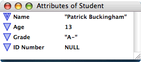
The two types of icon indicate whether the attribute is defined in this class or inherited from a parent class.
|
|
|
|
|
- For a given class, each attribute in the class must have a unique name. The word default cannot be used as the name of an attribute.
|
For information on working with attributes, see The Class Attributes and Instance Attributes windows. |
Methods
Methods are the software routines of the Marten IDE. Classes and sections have methods, with the methods of a class termed "class methods" while those of a section are called "universal methods". A shorthand is often used with "universals" standing in for universal methods and just "methods" for class methods.
A "type" may be installed for a method. This allows them to participate in program execution in a special way; they can be constructors, destructors, tools, editors, and importantly, the MAIN method.
Within a class, all methods must be uniquely named, regardless of type. All universals across all the sections of a project must also be uniquely named.
The following sections describe the types of methods available in Marten and provide additional method-related information. They include:
Class methods
A class method is a method defined for use within a particular class. In contrast to attributes which are the "nouns" of an object and define its properties, class methods are the "verbs" and define the actions or behaviours of that object.
After creating a class method, you can assign a type to the method so it can participate in program execution in a specific way. There are four types you can assign:
Constructor type method
Many times in your code, you will follow the creation of an instance for a certain class with a consistent initialization of that instance. If you wish to perform that initialization for all newly created instances of that class in any method, you can create a "constructor" for that class. A class constructor is a method which will be called whenever a new instance of that class is created programatically. This type of method has one input and one output. The input is the newly created instance and the output must be that instance. In between, you modify that instance to suit your specific purposes. Because of the nature of a constructor, there can be only one such method per class.
|
For information on how to designate a method as a Construction method, see Changing the type of class method. |
Destructor type method
Similar to the notion of a constructor, you may wish to perform specific processing just as an instance of a class is about to be garbage-collected and removed from the heap. You might wish to make a system call to free system allocated objects before an external block is disposed of. This can be accomplished by a destructor, a class method called just before the instance is disposed of. This type of method has one input, the instance, and no outputs. In addition, there can be only one destructor per class. One important distinction between a constructor and a destructor is when they are called. Because a destructor can not know the context of its disposal, a destructor is ALWAYS called when a object is disposed of, EVEN when that occurs non-programatically. An example is when a persistent, that already contains an instance, has its value changed by the Value Editor. In that case, the soon to be disposed of instance will call its destructor. In contrast, if a new instance is created and placed in a persistent by the Value Editor, the constructor is NOT called.
|
For information on how to designate a method as a Destruction method, see Changing the type of class method. |
Editor type method
If you create a method for editing instances of a class, you can designate that method as an Editor. For example, you might have a class which represents a visual object, like a rectangle. It is far easier to modify the attributes of the object by visually editing them (say by resizing the image of the rectangle) than by typing in new values for the attributes in the Value Editor. You can create such an editor and and have the IDE invoke it appropriately to edit an instance or the attributes of a class. The method that is invoked is called an "editor method" and it should be used to open an editor of your design. An editor method has two inputs and two outputs. The first input is the instance you wish to edit. The second input is available to be used to set up a parent-child relationship between editors. For an initial invocation, this input will be NULL. The first output should be a Boolean, either TRUE indicating the instance was modified or FALSE indicating that the instance should not be changed. The second output should be the modified instance which will then be substituted for the original one in the Marten IDE.
|
For information on how to designate a method as an Editor method, see Changing the type of class method. |
Tool type method
A class method has been designated as a tool can be executed from an Editor menu command. Tools allow you to extend the Marten Editor and are typically used to provide functionality useful during development.
There are several times when you might wish to run certain methods from the IDE. For example, you might run a method to accomplish an editing function or to execute a test suite. Because of the nature of the Marten IDE with its focus on persistents and stored instances, it is often useful to create a method which will construct a list or an instance which can then be stored in a persistent for future use by the application. While you can always navigate to such a method and execute it, it is easier to designate such a method a tool. When a method is installed as a tool, the name of the method is placed in the Tools menu and it will be executed if selected from the menu. Because the IDE cannot supply a method with inputs nor process outputs, a tool method cannot have any inputs or outputs.
|
For information on how to designate a method as a Tool, see Changing the type of class method. |
Universal methods
Universal methods, or "universals", are methods that are procedural in a nature and are not members of any class. Universal methods are used:
For working with data that is not associated with classes.
A universal method icon is identical to the class method icon. Universal method names must be unique across an entire project.
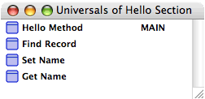
|
For information on working with universal methods in the Marten Editor, see The Universal Methods window. |
Cases
Every universal or class method contains a list of one or more "cases". A case is a blueprint of operations and connections, the actual executable code of a Marten project.
When a method is called, either by the application (the MAIN method) or by another method, the first case in the list is executed. Starting with the first operation in the case, the input bar, each operation in the case executes and then processing passes to the next operation in turn. When an operation executes, it may either succeed or fail. This condition may be tested (as in the example of a Match operation) and the result of the test may lead to a change in control flow.
The test may result in the method terminating, finishing, continuing, failing, or control being passed to the next case in the list.
|
For details on control flow in general and the use of controls, see Controls. |
The following diagram shows two cases of a method called Factorial .
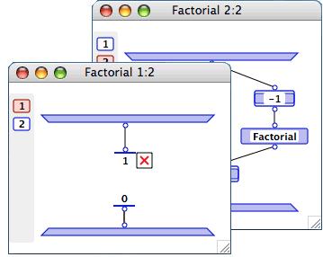
A case consists of an input bar and output bar and a set of operations connected with datalinks. The input bar lets you pass parameters to the case while the output bar returns values from the method.
Each case of a method has the same number of inputs and outputs. The number of inputs and outputs of a method is referred to as its arity.
An expression of the form n : m , where n is the number of the current case shown and m is the number of cases in the method
The name of the method.
|
For information on working with cases of methods in the Marten Editor, see The Case window. |
Operations
An operation is the basic unit of execution in a case. Operations, in addition to datalinks and synchros, are the building blocks of cases. Operations initiate some action. They are most commonly used to make calls to primitives or methods, set or return the value of attributes or persistents, or perform some other form of processing.
Below is the icon for a typical operation. An operation has a name, zero or more imputs and zero or more outputs.
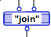
An operation can perform its processing using input data and can produce output data. An operation can also have side effects. It can change values on simple data or change the state of an object.
An operation in a case can execute as soon as data has arrived on all its inputs.
The following sections provide details on Marten operations. They include:
Terminals and roots
In a dataflow language, data in a method is passed from operation to operation along datalinks. Datalinks provide input data to an operation through terminals at the top of the operation. If the operation returns data, it is passed out of one or more output roots at the bottom of the operation. Output data can be routed to another operation using a datalink.
The input bar in a case can have roots which pass parameters to operations in the method. The output bar can have terminals used to pass values out of the method.
For certain primitives, the number of terminals and roots can vary. This depends on the type of the primitive and the action that it performs. For example, the (join) primitive lets you join two lists. Minimally two inputs are required but you can also pass in more lists using additional roots.
The minimum number of roots and terminals required by an operation is referred to as its arity.
|
For information on working with roots and terminals, see Working with roots and terminals. For more information on datalinks, see Connecting operations. |
Types of operations
There are a number of different types of Marten operations. Each type of operation performs a specific action in Marten. The types of operations are:
Evaluate operations.
|
In addition to these types, there are external operations which provide access to code written in C. For details, see External operations. |
Simple
A method, either universal or class-based, determined by the naming convention.
|
For details, see Operation names. |
Constant operations
A Constant operation is used to pass a static, textual value to another operation. It has a name and a single root:
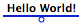
Its name is the textual representation of a simple value: a string, a list, or a number. When a constant operation executes, this value is made available on its root to be passed to another operation.
|
For details on how to change an operation into a constant, see Constant. |
Match operations
A Match operation tests the value passed from the output root of another operation. It has a name, a single terminal, and always has an attached Control.
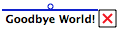
Like a constant, the name of a Match operation is a textual representation of a simple value. When a match operation executes, its value is compared to the value passed into its terminal. The match operation succeeds or fails depending on the results of the comparison.
|
For details on controls, see Controls. For details on how to change an operation into a match, see Match. |
Persistent operations
A Persistent operation accesses the value of a persistent. It has a name, at most one terminal, and at most one root. For details on persistents, see Persistents.
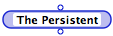
If a persistent operation has an input, it is from a Set Persistent operation. The value passed into the input becomes the value of the persistent. If it has an output, it is to a Get Persistent operation.
|
For details on how to change an operation into a persistent operation, see Persistent. |
Instance operations
An Instance operation instantiates an object of the class corresponding to its name. An Instance operation has one input, one output, and a name.
If no value is passed on the input terminal (that is, there is no attached datalink), the instance is created with default attribute values set in the class definition.
If there is no Construction method in the class referenced by the name of the Instance operation, then the Instance operation creates the instance.
|
For details on how to change an operation into an instance operation, see Instance. |
Get operations
A Get (short for `Get attribute) operation returns the value of an attribute. The name of a Get operation is the name of the attribute that is to be accessed. A Get operation has one terminal, and two roots:
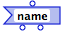
The input on a Get operation can be either an instance of a class, or a string whose value is the name of a class. The second option returns the default value of the attribute, and is also useful for accessing class attributes without first having to find or create an instance of the class.
Left root, the instance (if the input was an instance).
|
|
If the input was the name of the class, the left root is the name of the class in interpreted code. However, for efficiency reasons, the default instance of the class is returned in compiled code. |
Right root, the value of the attribute.
If the name of a Get operation specifies a Universal reference (the name is not preceded by a slash), the value of the attribute is directly accessed.
If the name of a Get operation specifies a data-determined reference (the name is preceded by a slash), the operation calls a Get method of that name in, or inherited by, the relevant class. If that Get method does not exist, the attribute is directly accessed.
|
For information on types of reference, see Operation names. For details on how to change an operation into a Get operation, see Get. |
Set operations
A Set (short for `Set attribute) operation sets the value of an attribute. The name of a Get operation is the name of the attribute that is to be set to a new value. A Set operation has two terminals, and one root:
Left root, an instance of a class, or a string whose value is the name of a class. If the input is a string the default value of the attribute will be set. This latter option is also useful for setting a class attribute without first having to find or create an instance of the class.
Right root, the value to which the attribute is to be set.
If the name of a Set operation specifies a Universal reference (the name is not preceded by a slash), the attribute is directly accessed and its value set.
If the name of a Set operation specifies a data-determined reference (the name is preceded by a slash), the operation calls a Set method of that name in, or inherited by, the relevant class. If such a Set method does not exist, the attribute is directly set.
|
For information on types of reference, see Operation names. For details on how to change an operation into a Set operation, see Set. |
Super operations
A Super operation is a class-based operation that executes a method belonging to the class of its immediate parent:
The name of a super operation is always in the form // name . The class of the method called is determined by the class of the method using the Super operation. The search for the method to be executed does not start in that class, but in the class immediately above it in the class hierarchy. The icon for a Super operation has an upward-pointing arrow on its right side.
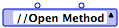
You can use a Super operation when writing a method in a subclass that has the same name as a method in its parent class, but also uses that parent class method as part of its definition. This means that method x can refer to its parent's method x without infinite recursion.
|
For details on how to change an operation into a super operation, see Super. |
Locals
A Local Operation, or Local Method, is a grouping of a set of operations into a single user-named icon. This can be used to save space in a case window and allows you to create black box code units; making several operations that perform some functionally related code into a single operation:
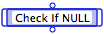
Locals have two components - the local operation icon and the associated Local method of the same name. Locals are meant for use within one method.
|
For details on how to create locals, see Local and Operations to Local. |
Evaluate operations
An Evaluate operation evaluates a mathematical expression. For example:
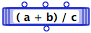
An Evaluate operation has a name, one or more terminals, and one root.
Name
The name of an Evaluate operation is the actual mathematical expression. Operators that can be used in the expression are listed below. All operators are binary (for example, a>>b right shifts a by b bits) unless otherwise indicated:
Terminals
The input arity (number of terminals) of an Evaluate operation is the largest position within the alphabet of the variables used in the expression. For example, if the letter j is used as a variable, at least 10 terminals are created on the operation.
Root
An Evaluate operation has one root, which passes out the result of the evaluation.
|
For details on how to change an operation into an evaluate operation, see Evaluate. |
External operations
Marten supports calls to routines and accessors to data written in C. Macintosh Toolbox API calls, and accessors to External constants, structures, and fields, are implemented in this way. For a detailed discussion of the calling conventions for External operations refer to the Marten Primitives Reference .
Operation names
When first created, all operations are Simple. When a name is assigned to the operation, Marten checks to see if it references a primitive, a call to external code, or a user-defined method, and then changes the type of the operation, altering the appearance of the operation icon appropriately.
|
For examples of the appearance of the various types of operation icons, see the descriptions under Types of operations. |
If an operation calls a user-defined method by name, the method to be executed is found according to the following rules:
If the operation name has the form methodname , with no slash ( / ) preceding the name, the operation calls a universal method. This is referred to as a universal reference.
- If the operation name has the form / methodname , the operation calls a method with name methodname in the class of the instance arriving as data on the leftmost terminal of the operation. This is a data-determined reference. If the class is a subclass and does not have a method of its own called methodname , an inherited method called methodname is used. If no method called methodname is found in the class or in any of its ancestors, this results in an error condition.
- If the operations's leftmost terminal is not an instance of a class, but is a simple datatype, Marten will attempt to execute a universal method called methodname .
- If the operation name is in the form classname / methodname , Marten searches for the method in class classname . If it is not found there, Marten will search the ancestors of that class. This is referred to as an explicit reference.
Connecting operations
Marten provides two ways in which operations can be connected: with datalinks which pass data between operations and with synchro links which determine the order in which operations execute.
The following sections contain more information on the two methods of connecting operations:
Datalinks
In Marten, data is passed into an operation through terminals at the top of the operation icon, and passed out through roots on the bottom side of the operation icon.
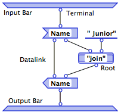
Data flows from the roots of one operation to terminals of other operations through datalinks. Data enters a method via a root on the input bar, and exits a method via a terminal on the output bar:
|
When you create a datalink between the root of an operation and a terminal of the same operation, you create a Loop annotation. For more information, see Loop annotations. |
While a root can have multiple connecting datalinks passing a value to several other operations, a terminal can have at most one connecting datalink, excluding a Loop annotation. For example:
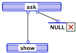
The input bar and output bar of a case are also operations. They are automatically supplied by Marten and cannot be deleted or duplicated. The input bar has no terminals, the output bar has no roots, and both are unnamed.
Synchro links
In a Marten case, operations can execute as soon as all their input data have arrived. This makes it possible that several operations can be ready to execute next. When this is the case, the order is chosen randomly (at edit time, not at runtime) by the Marten Interpreter, unless a synchro link is present.
A synchro link, or synchro, dictates the sequence of execution between two operations. If the synchro is from operation /Dispose Editor to operation NULL , it guarantees that NULL executes after /Dispose Editor has executed:
Multiplexes
Multiplexes provide looping, or list-processing functions. They can be applied to primitive operations as well as user-defined operations. The Marten editor provides the following multiplex annotations:
List annotations are applied to individual terminals and roots. On a terminal, they have the effect of applying the function of the associated operation to every item of a list arriving on the annotated terminal. A list-annotated root returns values from the operation as a list.
- Loop annotations make repeated calls to a method, passing the output of each iteration as input of the next iteration. They can be applied to both terminals and roots.
Repeat annotations make repeated calls to a method. You apply Repeat annotations to an operation.
List annotations
Applied to a terminal, the List annotation results in that operation being applied to every element of the list arriving on that input. Applying a List annotation to a terminal changes its shape to a triplet of circles.
A list-annotated operation applies itself to each element of its input list or lists:
Until a Fail, Terminate or Finish control within the called method is activated.
A List-annotated root returns the list of elements returned from an operation as a list of results. The output list does not include any NONE values that may have been produced.
An operation can have multiple list-annotated terminals and roots.
|
For information on how to apply this annotation, see List. |
Loop annotations
A Loop annotation is applied to a root/terminal pair on an operation that calls a method. It causes the results flowing out of the loop-annotated root to be cycled back in as the input on the loop-annotated terminal for the next iteration of the loop. An operation with loop-annotations executes repeatedly until activation of a Fail, Terminate or Finish control within the called method.
Applying a Loop annotation to a terminal/root pair changes the shape of the terminal and root to a portion of an arc.
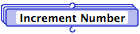
List annotations are similar to a FOR loop in a procedural language. The FOR loop is the simplest case of a loop-annotated method, however. You can set up a method to terminate based on testing of any supplied condition. To terminate the loop, you must implement the pre-test or post-test condition using the Fail, Terminate, and Finish mechanisms in the called method.
|
For details on using controls to terminate execution of a method, see Controls. For information on how to apply this annotation, see Loop. |
Repeat annotations
A Repeat annotation executes repeatedly until activation of a Fail, Terminate or Finish control in the called method:
Repeat annotations are similar to REPEAT...UNTIL or WHILE...DO loops in a procedural language. To terminate the loop, you must implement the pre-test or post-test condition using the Fail, Terminate, and Finish mechanisms in the called method.
Putting a Repeat annotation on an operation creates stacked copies of the operation.
|
For details on using controls to terminate execution of a method, see Controls. For information on how to apply this annotation, see Repeat. |
Controls
Flow of execution within a Marten program is provided by "controls" associated with operations. A control is activated on the success or failure of the operation. Marten operations can succeed, fail, or be in error.
Visually, controls are displayed as small square icons attached to the right side of an operation icon. There are two key properties of a control: the action that is to be taken, and whether that action is to be taken on success or failure of the operation. Control icons depict this as follows:
The other graphics within the square icon indicate the action to be taken. This includes actions such as forcing the method to proceed to the next case or terminating execution of the method.
The following sections provide additional detail on controls:
Success, failure, and error.
|
For information on working with controls, see Using controls. |
Types of controls
Controls on operations dictate an action to be taken on a particular condition. The types of controls available in Marten are:
Next Case control
The Next Case control terminates processing of the current case and passes control to the next case in the method. If there is no next case an error condition is signalled. The Next Case icon is plain, with nothing inside it except for its activation mark.
|
For information on how to add a Next Case control to an operation, see Next Case. For information on the activation condition, see Success, failure, and error. |
Continue control
The Continue control continues processing of the current case based on the result of a tested condition.
Continue on Success is the default for operations, and has no icon. If Continue on Success fails, the Marten Interpreter will generate an error message indicating that the operation failed but there is no control on it.
The Continue on Failure icon has an X activation mark and includes depictions of small input and output bars. You can use this control to ignore failures and error conditions.
The alternative to continuing execution is to terminate, finish, or fail.
|
For information on how to add a Continue control to an operation, see Continue. For information on the activation condition, see Success, failure, and error. |
Terminate control
The Terminate control immediately stops execution of the current case and terminates any repetition of the current method. If the method returns values, the values returned are those produced during the last successful iteration of the method. NULL is returned if there was no iteration.
The small input bar within the Terminate control icon, indicates that values returned are those currently on the input bar (that is, values returned on the output bar on the last successful iteration).
|
For information on how to add a Terminate control to an operation, see Terminate. For information on the activation condition, see Success, failure, and error. |
Finish control
The Finish control allows the current case to finish executing but terminates any repetition of the current method.' If the method returns values, the values returned are those produced by the current case. This is indicated by the small output bar on the Finish control icon.
When an operation with a higher precedence is encountered, a Next Case control for example, that operation takes precedence over the Finish control.
|
For information on how to add a Finish control to an operation, see Finish. For information on the activation condition, see Success, failure, and error. |
Fail control
The Fail control propagates failure to the calling operation.
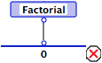
The match-with-0 operation has a Fail control, so if Factorial does not return 0, the match fails, and Failure is propagated to the calling operation, which in turn fails. There should be an appropriate control on the calling operation to handle that failure.
|
For information on how to add a Fail control to an operation, see Fail. |
Inject control
An Inject control provides a name for an operation at runtime. You provide the operation name by passing a string into the Inject.
When an Inject is applied to a selected terminal, it assumes a distinctive shape.
Injects can be combined with List and Loop annotations.
Inject terminals cannot be used on the following types of operations: Constants, Matches, Local or any of the External operations.
The following example shows how an inject control could be used:
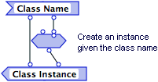
Here an instance of a class is required for use later in program execution. The Class Name attribute supplies a string value which is used to generate the instance by use of an inject control applied to an Instance operation. In general, injects are used to provide a name to an operation; a name which will only be available at runtime.
|
For information on how to apply an Inject control, see Inject. |
Persistents
Persistent operations, are named elements that can hold the value of a simple datatype or an instance. Persistent values are retained between executions of an interpreted program and saved by the Marten editor as part of the project.
Since Persistents are effectively global variables, the names of a persistent must be unique across a project.
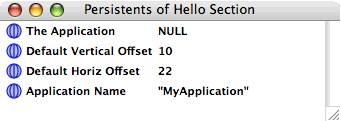
In a Case window, a Persistent operation can have a terminal. This would be used to pass the value to which the persistent is to be set. A Persistent can also have a root, used to access the value of the persistent.
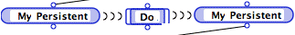
|
For information on working with Persistents in the Marten Editor, see The Persistents window. |
General Editor usage
Finding Marten elements
The Editor is an integrated workbench for writing, testing, and debugging Marten applications. It is the primary environment for creating, modifying, and maintaining Marten source code.
The following topics provide an overview of features and behaviors of the editor environment, describe general operations and common editor tasks, and introduce topics that are covered in detail elsewhere.
|
Additional information on the Editor environment can be found in the following topics: Editor menus and menu commandsEditor windows.For information on the Interpreter environment, see . For information on using the compiler, see . |
 General Editor operations
General Editor operations
General operations and relevant information include:
Starting the Marten editor
To start the Marten Editor application, try one of the following:
What happens when Marten is started
When Marten loads a project, it loads each of the sections files included in the project and any libraries that have been added to the project. The following topics provide details on these two processes:
How Marten loads extensions on startup
Marten libraries contain extensions to the language you can use in building applications. This can include
External definitions that provide access to compiled C code.
You add libraries to a project explicitly. Once you have added a library to a project and subsequently saved the project, the library will be loaded each time you load the project (if it is one of the search paths described below, otherwise you will be asked to find it).
On the other hand, if you start Marten by by double-clicling the Marten icon or double-clicking a section icon, no libraries will be automatically loaded.
For details on extensions and libraries, refer to the Marten Primitives Reference .
How Marten adds sections when a project is loaded
When Marten loads a project, it adds each section included in the project. To optimize your projects, you must understand the search path and folder trees, know which folders are not searched for sections, and understand pathnames and search order.
Folder trees searched when Marten loads a project
When adding sections and libraries to a project, Marten searches several folder trees for project components:
The first, or project, tree starts at the folder containing the active project
- The second tree starts at the user library named Marten ( ~/Library/Marten )
- The third tree starts at the root library folder named Marten ( /Library/Marten )
- The fourth tree starts at the network library folder named Marten ( /Network/Library/Marten )
- The fifth tree starts at the user library Frameworks folder ( ~/Library/Frameworks )
- The sixth tree starts at the root library Frameworks folder ( /Library/Frameworks )
- The sixth tree starts at the root library Frameworks folder ( /Library/Frameworks )
- The seventh tree starts at the network library Frameworks folder ( /Network/Library/Frameworks )
Folders not searched when a project is loaded
Folders with parenthesized names, (myProject folder) for example, are not searched when Marten is searching for project components, regardless of their location.
About paths and search order
A project stores filenames only; it does not include pathnames. When you open a project, Marten searches for a section first, in the project tree and then, if it hasn't been found, in all the other trees (the Marten trees) in the order listed above. The pathname to a section is resolved at the time the project is opened.
Implications and suggestions
When setting up a folder structure to organize the source code for your Marten projects, keep the following in mind:
You can override a section in the Marten trees by adding a section of the same name to your project tree.
- Because Marten resolves full pathnames when a project is opened, you can store section files in any tree, in any arbitrary subfolder structure.
- If you have sections that you want available to all projects, you can create a folder in one of the Marten trees and store those sections in that folder.
- You can create a backup folder in your project folder, if you parenthesize the name, (MyBackups) for example.
- A section file added using the Open menu command and NOT located in any of the search trees will not be found when the project is subsequently closed and reopened. The section must be located in one of the two trees to be found.
- You can remove all sections stored in the same folder from a project by parenthesizing the folder name, reopening the project, and as Marten displays a dialog for each section that is not found, clicking Remove . You should exercise caution, however; do this on a copy of your project file, as restoring the sections can be time-consuming.
- To allow the two search trees to be searched as quickly as possible while allowing for maximum flexibility in organizing files, folder contents should be organized as follows:
- Folders that contain section files should contain ONLY section files to whatever extent possible
- Folders that contain only non-section files should have their names parenthesized.
- As a general rule, project folders should NEVER be stored in the Marten trees. This places the project tree inside the Marten trees and can result in the project tree being searched twice for sections; the first time because it is the project tree and the second time because it is part of the Marten trees. The worst case scenario is to have all projects in the Marten folder. Not only will this result in lengthy loading times, it can also result in the wrong sections being loaded.
- You CAN put projects in the Marten trees if you create folder with a parenthesized name and store your project folders within that folder. With that setup, an individual project folder will be searched once as the project directory tree, but the parentheses around the parent folder will prevent the remainder of your project folders from being searched as part of the Marten trees.
Quitting Marten
There are a number of ways to quit the Editor.
To exit the Marten application, use any of the following techniques:
If you are outside of the Marten editor and interpreter, you must first switch back to the Marten environment. If you are running your project application (the interpreter), for example debugging a method or executing your application, you must finish the interpreter session. Click on the project application icon in the dock to bring the interpreter to the front. Then either quit your executing application or finish debugging or close any object editors, whichever applies. This should bring the Marten editor to the front, then from the File menu, choose Quit .
Project and section operations
When creating an application with Marten your source code is organized into a project. A project is a Marten document. From the perspective of the Macintosh environment, a project is a disk file with a distinctive icon.
A project typically consists of a number of sections. Like a project, a section is a disk file with its own icon.
In Marten, a section provides access to a project's highest level components: classes, universal methods, and persistents.
Marten provides a number of operations for working with projects and sections. Starting the Marten editor describes ways to open projects and load sections while starting Marten. The Sections window describes a dedicated editor for working with sections. Other available operations include:
Creating a new project
The first step in developing a new application is to create a project to organize your source code. Once you have created a project, you can build sections manually or add existing sections to the project.

Marten products that include a class framework are delivered with one or more starter projects. For details, refer to the documentation for the specific Marten product.
To create a new project while Prograph is running:
Bring the Projects window to the front. If there is not a Projects window open, select the New Projects Window command from under the File menu.
COMMAND-click anywhere in the white space of the Projects window. An alternative is to hold down the Control Key and click the mouse (this is a "right-click" in MacOS X) in the white space of the Projects window.
Select the New Project command.
A dialog will appear asking you for the name of the project application you wish to create.
Enter the name.
A new Project item is created in the Projects window with the name of your Project application selected.
Modify the name for the project and press RETURN.
|
For details on working with projects, see The Projects window. |
Opening an existing project
To open a project while Prograph is running:
Select the project in the file listing and click OK.
|
For details on working with projects, see The Projects window. For details on how to open an existing project while starting Prograph, see Starting the Marten editor |
Creating a section
The most common reasons for creating a new section are:
Reorganizing existing source code.
Whenever possible, you should organize your source code so that sections contain reusable, self-contained code that can be added to several projects, as needed.
To create a new section use one of the following techniques:
COMMAND-click anywhere in the white space of the Sections window. An alternative is to hold down the Control Key and click the mouse (this is a "right-click" in MacOS X) in the white space of the Sections window.
Select New Section from the context menu.
A new Section item is created in the Sections window with the name Untitled Section selected.
Enter a name for the new section and press RETURN.
|
|
A disk file is not created for a section until the section is saved. When the section is saved, you should always accept the suggested name presented in the Save dialog to keep the section file name synchronized with the project section name. For options on saving, see Saving a project and Saving sections. |
|
If you are creating classes, universals, or persistents from scratch, icons in the Sections window provide access to the respective editor windows. For information on working with these editors, see the following sections: The Classes windowThe Universal Methods windowThe Persistents window. |
Adding an existing section to a project
Your source code should be organized so that commonly used functionality is stored in individual sections that can be used in a number of projects. You can add an individual section to an existing multi-section project.
Saving sections
A section may be saved at any time whether the contents have been changed or not, as some modifications (such as window placement) are not considered to have modified the contents.
A Classes window, Universal Methods, Persistents window, Attributes window, or Class Methods window is the active window; in which case you have the option of saving the owning section.
To save a section for the first time:
Common operations on windows
The following topics describe general principles and instructions for working with Marten windows. They include:
Closing windows.
The descriptions will not be repeated in other sections unless a rule or method does not apply in certain cases. In that case, details are provided in the appropriate topic.
|
This section does not cover operations and features of specific window types: Sections window, Universal Methods window, Classes window, Persistents window, Class Methods window, Attributes window, Case window, and Value window. Each of these windows provides functionality specific to the type of associated Prograph element. For information on how to use these windows, see Editor windows. |
In addition, the following topics cover basic Macintosh functionality as it applies to Prograph windows.
Standard window components
Most Marten editor windows have the following standard components: a close button, a minimize button, a zoom button, and a caption. Depending on the type of editor window, the caption may indicate the type of Prograph elements the window displays or simply the name of the element.
Opening windows
In general, you must open an editor window to inspect, create, or modify Marten elements in that window. The Editor offers a number of different ways to open windows. These include:
Opening windows from the Info window.
Keep in mind that those sections provide general instructions only; instructions on how to open specific editor windows can be found in Editor windows.
Opening windows by double-clicking icons
An editor window contains icons that represent Marten elements. For example, a Classes window contains a list of icons that represent the classes in a section. Typically, Marten element icons provide access to other editor windows. In the case of the Classes window, the icons give you access to the methods and attributes of a class.
Opening windows using the Windows menu
Windows menu commands allow you to open a particular Sections, Universal Methods, Classes, Persistents, Methods or Attributes window. They also let you make an open window the active window.
To make an open window the active window:
From under the Windows menu, choose the Marten window to be opened from the list of open windows at the bottom of the menu..
|
For detailed information on the Windows menu, see The Window menu. |
Selection and editing rules
Icons for many Prograph elements have associated text. For example a class icon always has a name. An operation can also have an associated comment. The following topics present the basic guidelines on selecting icons and text:
Selection in general
Clicking on an icon selects the icon. Clicking on the associated name selects that text.
The first click in a name or comment text area selects the entire text, which is highlighted. When text is selected, a second click in the text area de-selects the entire text and positions the insertion point at the click position. These points are illustrated in Selecting Marten icons and text:
Selecting Marten icons and text
- You can use the ENTER and RETURN keys to toggle between selecting the icon and its text.
Selection and operations
Marten operations in a Case window have their names within their icons. When you click on the name of an operation, the name is selected and the insertion point is placed at the click point.
|
For background information on cases, see Cases. For information on using Case windows, see The Case window. |
Clicking outside the name, on the right or left side of an operation icon selects the icon, and deselects the name. You can use the ENTER or RETURN key to toggle between selecting the icon and the name of an operation:
Multiple selection
Several Marten icons can be selected, but only one text item (name or comment) can be selected at a time.
Selection: icon vs. text
When an icon is selected, alphanumeric and arrow keys are disabled. When text is selected, the alphanumeric keys insert characters into the text and the left and right arrow keys move the insertion point in the text.
Menu commands that apply to a Marten element are still enabled when the element's text is selected. For example, you can apply a control when an operation's text is selected for editing.
Editing text
Text in Marten is edited using standard keyboard and menu item functionality. The DELETE key, the arrow keys and Cut, Copy and Paste operations all work as expected.
Changes made to any text - names or values - can be undone back to the point at which the text was selected for editing. That is, while text is selected for editing, choosing Undo Text from the Edit menu will cause the text to revert to the value when the text was selected.
Editing Marten elements
Marten provides a set of basic editing functions common to all language elements. The following topics describe the most common editing functions:
Moving elements.
|
These are basic editing functions, only. Additional editing function depends on the type of Prograph element and the editor window in use. For details, see Editor windows. |
Creating elements
|
In general, instructions in Marten documentation assumes that you are using all default settings in the Preferences dialog. For details on individual settings, see Preferences. |
Moving elements
In a Case window, you drag an icon to move it to a new position in a window.
If more than one element is selected, dragging moves all the selected elements in the window so that they maintain the same positions relative to each other.
When you drag an element to a new position, any connecting links (datalinks, synchros, or inheritance links) are adjusted to account for the new position. Connection relationships are preserved.
Finding Marten elements
The Edit menu's Find command opens a Find dialog that lets you search for Marten elements, definitions, and instances of text strings.
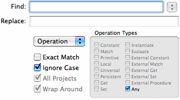
Using this dialog, you can execute searches (and optional replaces) ranging from the general to the highly specific. For example, you could:
Locate the definition of a class by its name.
The controls on the Find dialog let you specify a search criteria and execute the search.
Replace field
Optionally, you can use this field to enter a replacement string. This lets you replace operation or definition names.
Search for dropdown and Types check boxes
You use the Search for dropdown to choose the basic type of element you want to search for and the Types check boxes to further narrow your search. The Types check boxes displayed depend on the Search for option currently selected.
Choosing Operations from the Search for dropdown restricts the search to elements found in a Case window. When you choose this option, you can use the Types check boxes to further restrict your search to the following operation types:
A type definition can be a class definition, method definition, default attribute definition, or definition of a persistent. Choosing Definitions from the Search for dropdown restricts the search to the following definition types:
If you choose Text in Attribute , the search will return all attributes of type string in all existing instances. No Types check boxes are displayed, and Project is the only value selectable in the Search in dropdown.
If you choose Text in Window , the search will return Text windows with matching strings. No Types check boxes are displayed, Project is the only value selectable in the Search in dropdown, and the Close Windows option is not available.
Search in dropdown
This radio set lets you restrict your search to the following locations:
Current Method
If the front window is a Methods window with one selected method or is a Case window of a method, the search is restricted to operations in cases of that method.
Current Class
If the front window is a Classes window with one selected class, an Attributes window, or a Case window of a class method, the search is restricted to operations or definitions in that class.
Options check boxes
You can use the following options when executing a search:
Ignore Upper/Lower
If this box is unchecked, the search does not distinguish between lower and upper case. Otherwise, matching is case sensitive.
Match Pattern
If this box is checked, the Search and Set strings are treated as patterns. The asterisk (*) and question mark (?) characters have special status. A string matches the match pattern if the pattern can be made identical to it by substituting
A single character for each question mark.
The string substituted for an asterisk or question mark is called its match value. If there is more than one set of substitute strings that satisfy these conditions, the set chosen is the one that minimizes the lengths of substitute strings for occurrences of the asterisk, starting from the left of the match pattern.
In searching for operations, a match succeeds only if the search pattern matches the entire name of an operation. In searching for definitions, a match succeeds only if the search pattern matches the entire name of a defined program element. In searching for text attributes, a match succeeds only if the search pattern matches the entire value of an attribute. In searching Text windows, however, matching succeeds if any substring of the window contents matches the search pattern.
Retain
Dismisses the dialog without performing a search, but any changes made in the search criteria are saved.
Find
Clicking the Find button closes the dialog and starts a search for an item that satisfies the search criteria. If such an item is found, the window containing it is opened with the item selected. Otherwise a warning beep sounds and an appropriate message is generated. The Find function can be interrupted by pressing
Editor menus and menu commands
The Tools menu
This chapter provides a comprehensive description of the Marten Editor's menus and menu commands.
|
This chapter does not cover the Run menu which provides interpreter functionality. For details on those menu commands, see . |
 The System Menu
The System Menu
The System menu provides a set of standard application functions:
About Marten
Displays information about Marten, such as the version number and date of release. In addition, it displays a list of credits and the copyright notice.
Preferences
Invokes a Preferences dialog that lets you specify settings that apply across the Marten application.
Always open items in a new window
When enabled, double-clicking will always open a new editor window. When disabled, editors open in the same window in a manner similar to a web browser.
Open Project Window at Launch
When enabled (Default), the Projects Window will always be opened when starting Marten. When disabled, Marten will launch without displaying a Projects Window and to open it, you have to use the File menu New Projects Window command.
Show alternate line highlights
When enabled (Default), any editor windows have a faint banding displayed in the background of each window allowing users to see "rows" more easily. When disabled, all editor windows have a solid white background.
Case Dock Position
The Case Window always has a dock in which the case icons are displayed. This dock can be positioned against the left side (Default), top, bottom, or right side.
Export Mode
When Runtime is selected, all C code will be exported in the Runtime format and conversely when "Inline" is selected, all C code will be exported in the Inline format. The Runtime format is more forgiving of undefined symbols but will run slower. The Inline format requires all symbols to be defined but will will run much faster and is the recommended export format.
Services
Lets you select another application to provide a context-dependent service . For example, if text is selected, the text editor BBEdit could open a new document containing the selected text. This is a service that BBEdit provides and the service may be selected by navigating the Services submenus to the "Open Selection" command of BBEdit.
Hide Others
Hides windows or dialogs of other applications, leaving only the Marten application visible.
The File menu
The File menu provides file management, printer options, and the option to exit Marten.
It contains the following commands:
New
The File menu New Projects Window command opens a Projects window listing all open projects.
|
For general information on operations on sections and projects, see Creating a new project. |
Open
The File menu Open command opens an existing project or section. If a section is opened, it is added to the selected project or if no project is selected, a new project will be created.
|
For general information on operations on sections and projects, see Creating a new project. |
Save
If a Projects window is the active window, the File menu Save command saves the selected projects. If the Sections window of a project is open, the selected sections will be saved and if any other window type is active, the owning section is saved.
If the project or any contained sections have not yet been saved, a Save As dialog box prompts you to provide a name and a location. ALWAYS use the supplied name. Sections and projects are named in the editor, NOT by save dialogs. If Cancel is selected from any of these dialogs, the whole process is halted, and any remaining sections are not saved.
Saving sections and projects involves single files. Specifically, saving a project does not automatically save any dirty section files.
|
For more general information on operations on sections and projects, see Creating a new project. |
Save As
The File menu Save As command makes copies of one or more selected sections or projects.
If the Projects window is frontmost, the saved projects are those whose icons are selected.
If the Sections window is frontmost, the saved sections are those whose icons are selected. If a Classes, Attributes, Methods, Case or Persistents window is the frontmost window, then the selected section is the section to which that window belongs.
Import
The Marten editor can import (to a degree) Pictorius Prograph CPX section files, a software development product that first introduced graphical programming to the Macintosh computer. To import a CPX section file into a project, select the Import command from the File menu. Use the Open File dialog to navigate to the CPX files you wish to import, select them, and press the Open button. The section files will be translated into Marten sections files which will in turn be added to the project.
The importation process cannot translate all objects within a CPX file. In particular, Marten does not support the Partition control, external addresses, and external globals. In addition, Marten does not represent external procedures in the same manner as Prograph CPX which often leads to a difference in outputs. When any of these problem operations occur, they are added to a list which is presented at the end of the import process. This list is displayed in a window called Problem Items . Double-clicking on each problem item opens the case where the problematic operation is located, allowing you to fix the operation. For external procedures, it is recommended that you double-click the operation and compare the output information for the procedure with the number of roots of the actual operation.
In addition, Prograph CPX section files store their universal methods as class methods of a special class that appears in Marten as the Untitled Class . Methods appearing in this class should be moved to the section as universals and the class deleted.
It must be made clear that use of the Marten import feature does not guarantee the ability of importing a CPX section file and there is some risk in attempting it. While every effort has been made to import such files robustly, it is possible that the import process could lead to a crash or other abnormal behavior of the Marten application. You use this feature at your own risk.
Export
While it is recommended that you create your applications using the Update command, knowledgeable C programmers may wish to create applications in the C programming language for better performance. If you wish to do this, first make sure your application runs acceptably in the Marten environment. A Marten C application runs much faster than a Marten project application but is much less forgiving of any programming errors. Next, select the project item and all the section items and then select the Export command from the File menu. The project and sections will be exported in the C language, suitable for compiling and linking against the Marten frameworks.
Update
The File menu Update command converts the project application into a double-clickable standalone application. First make sure your application runs acceptably in the Marten environment, then select the Update command. All the required elements of your project (such as bundles, code, and resources) will be copied into your project application. After this process completes, your project application may now be used as a standalone application.
The Edit menu
In general, Edit menu items apply to the selected elements in the front window. Marten icons and associated text can each be selected separately.
The Edit menu contains the following commands:
Cut
The Edit menu Cut command copies selected elements and all dependent elements into the Object clipboard, similar to the Macintosh clipboard but internal to Marten. These are then deleted from their current locations. Cut is equivalent to Copy followed by Clear .
This command is available whenever a Marten element is selected.
Copy
The Edit menu Copy command copies selected elements and all dependent elements into the Object clipboard, similar to the Macintosh clipboard but internal to Marten. The content of the Object clipboard is retained until the next Copy or Cut operation.
This command is available whenever a Marten element is selected.
Paste
The Edit menu Paste command copies the contents of the Object clipboard into the active window. If there is a conflict between the name of an element in the window and the name of one of the newly-pasted elements, the pasted element is renamed.
This command is available whenever the Object clipboard contains a Marten element and the type of element on the clipboard is a valid element for the front window.
Clear
The Edit menu Clear command deletes selected Marten elements or if text is selected for editing, deletes the selected text.
This command is available whenever one or more Marten elements are selected or text is selected.
Duplicate
The Edit menu Duplicate command makes copies of selected Marten elements in the front window. It applies only to Marten elements and not to text. It is equivalent to Copy followed by Paste .
The copied elements are positioned slightly offset from the originals and renamed to avoid name conflicts. For example, a duplicated myMethod is renamed to myMethod # , and so on.
This command is available whenever a Marten element is selected.
Select All
The Edit menu Select All command selects all elements in the active window, or, if text has been selected for editing, selects all the text.
This command is available whenever the active window contains one or more elements.
Move To Section
The Edit menu Move To Section command moves selected classes, persistents or Universal methods to a different section. A dialog box lets you select the section to which the selected element(s) is to be moved. The selected classes, persistents or universal methods are deleted from the original section, and moved to the destination section.
Propagate Attribute
The Edit menu Propagate Attribute command copies the default values of the selected attributes of a class to the corresponding attributes of all its descendants.
Find
The Edit menu Find submenu contains commands that allow you to open a Find/Replace dialog that lets you search for Marten operations, definitions, and text. This command is available whenever an editor window is active in the Marten Editor. The Find submenu also contains other commands that let you find the previous or next occurrence of the query text and let you replace a single occurrence or all occurrences of the query text with the replacement text.
|
For a detailed description of how to find Marten operations, definitions, and settings, see Finding Marten elements. |
The Operations menu
The Operations menu provides a number of commands for transforming operations.
The commands available from the Operations menu differ if you have the OPTION key or SHIFT and OPTION keys depressed when you click on the Operations menu, as follows:
|
|
Generally, if an operation has a control and is transformed by one of the above menu items, its control is retained. Exceptions to this will be explicitly noted. |
Method
A simple Marten operation generally represents a method. The Operations menu Method command changes a selected operation to a Method operation.
|
For background information, see Simple. |
Primitive
This command is only available from the Operations menu when the OPTION key is depressed. It changes a selected operation to a Primitive operation.
|
For background information, see Simple. |
External Procedure
This command is only available from the Operations menu when the SHIFT and OPTION keys are depressed. It changes a selected operation to an External Procedure operation.
|
For background information, see External operations. |
Constant
Selecting an operation and choosing the Operations menu's Constant command changes the operation to a Constant operation. Any associated control is removed.
|
For background information, see Constant operations. |
External Constant
This command is only available from the Operations menu when the OPTION key is depressed. It changes the operation to an External Constant operation. Any associated control is removed.
|
For background information, see External operations. |
Match
Selecting an operation and choosing the Operations menu's Match command changes the operation to a Match operation. If the operation has no control, a Next Case on Failure control is attached.
|
For background information, see Match operations. |
External Match
This command is only available from the Operations menu when the OPTION key is depressed. It changes the operation to an External Match operation. If the operation has no control, a Next Case on Failure control is attached.
|
For background information, see External operations. |
Persistent
Selecting an operation and choosing the Operations menu's Persistent command changes the operation to a Persistent operation.
|
For background information, see Persistent operations. |
External Global
This command is only available from the Operations menu when the OPTION key is depressed and is currently unimplemented
|
For background information, see External operations. |
Instance
The effect of the Operations menu's Instance command depends on the selection as follows:
If the selected element is a method in a class-based Methods window, it becomes an Constructor method.
|
For more information, see Instance operations. |
External Address
This command is only available from the Operations menu when the OPTION key is depressed and is currently unimplemented. An External Get operation prefaced with the ampersand character ( & ) currently serves to access the external address of a structure.
|
For background information, see External operations. |
Get
The Operations menu's Get command converts a selected operation to a Get attribute-value operation.
|
For more information, see Get operations. |
External Get
This command is only available from the Operations menu when the OPTION key is depressed.It changes the operation to anExternal Get Field operation.
|
For background information, see External operations. |
Set
The Operations menu's Set command converts a selected operation to a Set attribute-value operation.
External Set
This command is only available from the Operations menu when the OPTION key is depressed. It changes the operation to an External Set Field operation.
|
For background information, see External operations. |
Local
Selecting an operation in a Case window and choosing the Operations menu's Local command changes the operation to a Local operation, which can then be opened and defined.
|
For background information, see Locals. |
Evaluate
Selecting an operation and choosing the Operations menu's Evaluate command changes the operation to an Evaluate operation.
|
For background information, see Evaluate operations. |
Run Mode
The commands of the Operations menu Run Mode submenu allow you to designate an operation as Normal (the default), as Skipped (the operation will never be executed, either in the Interpreter or Standalone), or Debug (the operation will ONLY be executed in the Interpreter).
Operations to Local
Selecting a group of operations and choosing the Operations menu's Operations to Local command transforms the group of selected operations into a Local.
|
For background information, see Locals. |
Local to Method
Selecting a single selected Local operation and choosing the Operations menu's Local to Method command transforms the Local into a Universal or Class method, depending on the format of the name you provide. Since Locals are available for use only within the method to which they belong, the Local to Method command provides a way to generalize the method if you find that a particular Local is useful enough that other methods also need to call it.
Two things happen when you choose Local to Method :
The information inside the local method is put into a universal or class method, depending on the name you provide.
When you select Local to Method from the Operations menu a dialog opens displaying a suggested name for the new operation (and its corresponding method). If the old Local belonged to a universal method, the suggested name will be the name of the Local; otherwise, the suggested name is the name of the Local preceded by two slashes ( // ). Regardless of the type of method to which the original Local belonged, you can change it into either a Universal method (by putting no slash ( / ) before the name), or into a Class method (by putting two slashes ( // ) before the method name), or typing a class name and one slash before the method name.
|
For details on the slash convention with method names, see Operation names. |
If naming a Universal method, a dialog box opens prompting you to select a section for the Universal method. In this dialog, if Cancel is clicked, the Local to Method dialog opens.
The Local to Method dialog box controls are discussed in the following sections.
Cancel button
If clicked, this button of the Local to Method dialog box closes the dialog box without performing the conversion.
OK button
When this button of the Local to Method dialog is clicked, if the name is not a data-determined reference, the Local is transformed into a simple operation and a corresponding new universal method is created in the appropriate place. In other words, if the name does not have a leading slash, the method created is a universal method in the current section.
If the name has an embedded slash, in the form classC / methodM , the method methodM is created in class classC .
If the name is a data-determined reference (in the form / name ), a second dialog replaces the first, with a scrolling list of names of classes. At most one class can be selected in this list. The new method is placed in that class.
The dialog box is comprised of the Select button and the Cancel button.
Select button
If a class is selected, clicking this button closes the dialog, transforms the Local into a simple operation with the specified name, and creates a corresponding method in the selected class with cases identical to those of the original Local.
Double-clicking an item in the scroll list is equivalent to first selecting it and then clicking the Select button.
Cancel button
Clicking this button dismisses the dialog without transforming the Local or creating a method.
In each of these situations, if the required new method cannot be created because its name would conflict with that of an existing method, the Local is not transformed. An error message is displayed, followed by a return to the Local to Method window.
|
For more information, see Locals and Local to Method. |
Tidy Operations
The Operations menu's Tidy Operations command reorders the icons in a window, aligning them in horizontal rows and spacing them to avoid overlapping.
The Controls menu
Marten operations, roots, terminals, and the output bar are annotated by items on the Controls menu.
|
For information on the role of Controls in the Marten language, see Controls. |
Some of the items on the Controls menu apply to selected operations, some to selected roots and terminals, some to either). With that in mind, the commands on the Controls menu fall into the following categories:
Control menu commands that only apply to operations
Some Control menu commands apply only to selected operations. They include:
Simple
The effect of the Controls menu Simple command depends on the selection, as follows:
If the selected element is a root (or terminal), the Simple menu command transforms it into a simple root (or terminal).
|
For information on root and terminal annotations, see Inject. |
Super
The Controls menu Super command applies only to selected operations. It transforms an operation into a Super operation. Its name is automatically changed, if necessary, into the form // name in order to prevent potential infinite recursion. The default arity is also automatically assigned.
|
For background information, see Super operations. |
Repeat
The Controls menu Repeat command applies only to selected operations. It transforms an operation into a Repeat multiplex.
|
For background information, see Repeat annotations. |
Control menu commands that affect roots and terminals
Some Control menu commands apply to roots and terminals of selected operations. They include:
Inject
When a terminal is selected, the Controls menu Inject command transforms the terminal into an Inject terminal. Since injects cannot have names, if the operation has a name, it is removed.
When an operation is selected, choosing Inject adds the new Inject terminal to the right of any existing terminals.
List
The Controls menu List command transforms a terminal (or root) into a List terminal (or root). The associated operation becomes a Repeat multiplex.
|
For background information, see List annotations and Repeat annotations. |
Loop
The Controls menu Loop command is currently disabled. To create a loop where a root of an operation is connected back to a terminal of the same operation, connect the root with the terminal as if you were creating a datalink.
The associated operation becomes a Repeat multiplex.
|
For background information, see Loop annotations and Repeat annotations. |
A menu command for toggling activation conditions
Each control described under Control menu commands for controls on operations and the output bar has an activation condition. Activation conditions can be changed using the Toggle logic menu command.
Reverse menu command
The Controls menu Reverse command toggles the activation condition of the control on a selected operation. Applying this item to an operation with no control adds a Continue on Failure control (the default control for an operation, Continue on Success, does not have a control icon).
|
For background information on activation conditions, see Success, failure, and error. |
Control menu commands for controls on operations and the output bar
The Next Case , Continue , Terminate , Finish , and Fail menu commands can be applied to selected operations and to the output bar. The general rules for these controls are:
If an operation already has a control, and the control is changed by selecting the appropriate menu item, the activation condition of the original control is retained in the new one.
|
For background information on activation conditions, see Success, failure, and error. |
If the operation has no control, and a menu item is applied to add a control to it, the new control has the default on Failure activation condition.
Next Case
The Controls menu Next Case command appends a Next Case control to an operation.
|
For background information, see Next Case control. |
Continue
The Controls menu Continue command appends a Continue control to an operation.
|
For background information, see Continue control. |
Terminate
The Controls menu Terminate command appends a Terminate to an operation.
|
For background information, see Terminate control. |
Finish
The Controls menu Finish command appends a Finish control to an operation.
|
For background information, see Finish control. |
Fail
The Controls menu Fail command appends a Fail control to an operation.
|
For background information, see Fail control. |
The Window menu
The Window menu provides a set of utilities for working with Marten editor windows. The Window menu has the following commands:
Attributes (Class Attributes if the OPTION key is depressed)
Remember Windows (Restore Windows if the OPTION key is depressed)
Minimize Window (Minimize All Windows if the OPTION key is depressed)
Bring All to Front (Arrange in Front if the OPTION key is depressed)
In addition, the Window menu maintains a list of all open or minimized windows in the project. They are positioned below the menu commands. Selecting a name from this list, makes that window the front window.
Information
Invokes the Information window, a lookup tool that provides information on Marten elements.
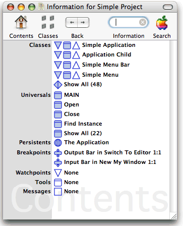
It shows a smart list of classes, universals, persistents, and other application elements, and allows you to perform a lookup on element names.
For example, if you typed SetRect (the name of an External procedure) in the Information text box and started a search (RETURN key), the default list would be replaced with a list information items relevant to that External Procedure. That would include a documentation icon which when double-clicked, would return a list of input and output C language types, and a list of all cases that use SetRect .
Sections
Choosing Sections from the Window menu opens the Sections of projectname window.
|
For background information on sections, see Projects and sections. For information on how to work with this editor window, see The Sections window. |
Universal Methods
Choosing Universal Methods from the Window menu opens a dialog prompting you to select a section. When you select a section, the Universal Methods window of that section opens.
|
For background information on universal methods, see Universal methods. For information on using this editor windows, see The Universal Methods window. |
Classes
Choosing Classes from the Window menu opens a dialog prompting you to select a section. When you select a section, the Classes window of that section opens.
|
For information on using this editor window, see The Classes window. |
Persistents
Choosing Persistents from the Windows menu opens a dialog prompting you to select a section. When you select a section, the Persistents window of that section opens.
|
For background information on persistents, see Persistents. For information on using the respective editor windows, see The Persistents window. |
Methods
Choosing Methods from the Windows menu prompts you to choose from a list of classes. When you choose a class, the Methods window for that class opens.
|
For background information on methods, see Class methods. For information on using the respective editor windows, see The Class Methods window. |
Attributes
Choosing Attributes from the Windows menu prompts you to choose from a list of classes. When you choose a class, the Attributes window for that class opens.
|
For background information on attributes, see Attributes. For information on using the respective editor windows, see The Class Attributes and Instance Attributes windows. |
Class Attributes
This command is only available from the Operations menu when the OPTION key is depressed. It prompts you choose from a list of classes. When you choose a class, the Class Attributes window for that class opens.
|
For background information on attributes, see Attributes. For information on using the respective editor windows, see The Class Attributes and Instance Attributes windows. |
Errors
Errors can occur when running your project in the interpreter. Generally an error forces the interpreter to halt with a warning message displayed. To potentially find out more about the problem, use the Errors command to display more detailed error information.
Stack
Choosing Stack from the Windows menu prompts for a process to be selected. When you choose a process, the Stack window for that process opens.
Remember Windows
The Remember command records the locations and sizes of the edit windows currently displayed.
Restore Windows
The Restore command is only available from the Window menu when the OPTION key is depressed. It restores the edit windows last recorded using the Remember command.
Minimize All Windows
The Minimize All Windows command is only available when the OPTION key is depressed. It minimizes all open Marten editor windows.
The Tools menu
The Tools menu contains menu items with the names of any Tools available in any sections currently included in the project. Choosing such a menu item executes the associated method, which may in turn present dialogs or menus.
|
For background information on tools, see Tool type method. |
Editor windows
The Value window
The Marten editor provides an editor window for each of the major language elements and an editor for working with values. This chapter describes howw to use the editor windows as you create and modify your Marten code.
|
This chapter does not cover features common to all windows nor does it cover general Marten Editor operations. For information on general features, see General Editor usage. For specific information on common window features, see Common operations on windows. |
 The Projects window
The Projects window
Projects are documents stored on disk as files, and their contents can be viewed in Marten windows. The name of a project is the same as the name of its corresponding disk file.
The Projects window provides a view of your currently active projects.
|
For background information on sections and related project tasks, see Projects and sections. |
Opening the Projects window
A project window is opened automatically when Marten is launched.
To open the Projects window:
From the File menu, choose the New Projects Window command.
The Projects window opens. It lists all currently active projects and provides access to each project's sections, libraries, and resources.
|
For information on working with sections, see The Sections window. For information on working with resources and libraries, see the Marten Primitives Reference . |
Starting a new project
The projects window is used to provide access to all of your active projects.
To start a new project:
If not already open, open the Projects window. For details, see Opening the Projects window.
COMMAND-click in any unoccupied space in the Project window. Alternatively CONTROL-click ("right-click") in the white space of the Projects window and select the New Project command from the contextual menu.
A dialog prompts you for the name of the project application you wish to create.
Enter the name.
A new Project item is created in the Projects window with the project application name selected.
Modify the name for the project and press RETURN.
|
For details on working with projects components, see Accessing the contents of a project. |
Removing a project from the Projects window
Once development is complete on a project, you can remove it from the Projects window.
To delete a project from the Projects window:
If not already open, open the Project window. For details, see Opening the Projects window.
Try one of the following:
- Select the project to be deleted and press the DELETE key.
- Click on the project to be deleted with the CONTROL key held down ("right-click"). A contextual menu opens. Select the Clear command from the menu.
- Select the section to be deleted, and from the Edit menu choose Clear .
|
|
Note that the file is not deleted from the disk; only from the project. Use standard Macintosh functions to delete the project from disk. |

The Sections window
Like a project, a section is a document. It is stored on disk as a file, and its contents can be viewed in Marten windows. The name of a section is the same as the name of its corresponding disk file.
|
For background information on sections, see Projects and sections. |
The Sections window provides access to Marten source code at the highest level of organizaton.
Each section has three associated icons that let you access the highest level components of a section.
Opening the Sections window
To open the Sections window, use one of the following techniques:
In the Projects window, double-click the Sections icon for a project.
|
For more information, see The Projects window. |
From the Window menu, choose Sections .
The sections window opens. It lists all existing sections in the current project
|
If you are creating classes, universals, or persistents from scratch, icons in the Sections window provide access to the respective editor windows. For information on working with these editors, see the following sections: The Classes windowThe Universal Methods windowThe Persistents window. |
Creating a new section
You create a new section to develop a new set of classes, universal methods, and persistent, or to reorganize some existing code.
To create a new section in the Sections window:
If not already open, open the project's Section window. For details, see Opening the Sections window.
COMMAND-click in any unoccupied space in the Sections window.
|
|
Alternatively, CONTROL-click (Right-click) in any unoccupied space in the Sections window and select the New Section command from the contextual menu. |
A new Section icon with a default name of Untitled Section is displayed.
To save the section, choose Save command from the File menu. Navigate to the location where you wish to save the section and click Save .
|
|
A disk file is not created until a section is saved. Because the section file name is required to be the section name, you should be sure to name your section before saving it. |
Whenever possible, source code should be organized so that sections are reusable; self-contained code that can be added to projects as needed.
|
If you are creating classes, universals, or persistents from scratch, icons in the Sections window provide access to the respective editor windows. For information on working with these editors, see the following sections: The Classes windowThe Universal Methods windowThe Persistents window. |
Removing a section from the project
Sections can only be removed using the Sections window.
To delete a section from the project, use one of the following techniques:
If not already open, open the project's Section window. For details, see Opening the Sections window.
Try one of the following:
- Select the section to be deleted and press the DELETE key.
- COMMAND-OPTION-SHIFT-click the section item ("Slam-Click").
- Select the section to be deleted, and from the Edit menu choose Clear .
|
|
Note that the file is not deleted from the disk; only from the project. Use standard Macintosh functions to delete a section from disk. |
Adding an existing section to the project
If you organize your sections as functionally-related, self-contained units, you can reuse sections in multiple projects.
To add an existing section to a project:
If not already open, open the project's Section window.
|
For details, see Opening the Sections window. |
Renaming sections
To rename a section:
If not already open, open the project's Section window.
|
For details, see Opening the Sections window. |
Select the section to be renamed, then click the name of the section. An edit text box will now frame the name with the cursor placed in the text of the name.
Accessing the contents of a section
You access the section's contents as follows:
Double-click the Persistents icon to open the Persistents window.
|
For information on working with the Classes, Universal Methods, and Persistents editor windows, see the following sections: The Classes windowThe Universal Methods windowThe Persistents window. |
The Universal Methods window
There are two general strategies for storing universal methods in a section:
The universal methods in a section are functionally related to the classes and persistents in the section
General use universal methods, or universal intended for use with one or more sections in the project, can be stored in a section dedicated to storing either general use universals or general use components, in general.
|
For background information on universal methods, see Universal methods. |
The Universal Methods window displays the universal methods in a section.
Creating a universal method
You can only create Universal methods in a Universal Methods window.
To create a Universal Method:
If not already open, open a Sections window.
|
For details, see Opening a Universal Methods window. |
COMMAND-click in any unoccupied space in the Universal Methods window.
|
|
Alternatively, CONTROL-click (Right-click) in any unoccupied space in the Universal Methods window and select the New Universal Method command from the contextual menu. |
This creates a new universal method icon with the name Untitled Universal .
Type a name for the universal method and press ENTER.
- If there is an existing universal method for which you have not overridden the default name, the new universal method is named Untitled Universal #1 . Large integers are used if necessary.
All methods must have names. The Marten Editor enforces this. The name of a universal method must be distinct from the name of all other universal methods in the project.
|
Once you have created a universal method, you can open a Case window for the purpose of defining the method. For details, see The Case window. |
Renaming a universal method
To change the name of a Universal Method:
If not already open, open the Universal Methods window for the section containing the method to be renamed. For details, see Opening a Universal Methods window.
Deleting a universal method
Universal methods can only be deleted using the Universal Methods for the section containing the universal method.
To delete a universal method, use one of the following techniques:
If not already open, open a Universal Methods window.
|
For details, see Opening a Universal Methods window. |
Accessing universal method contents
The icons in a Universal Methods window let you open the cases of the associated methods.
To open a case window on the first case of a universal method:
Double-click a universal method icon.
|
For details on working with cases of universal methods, see The Case window. |
The Classes window
A Classes window displays all the classes in a section.
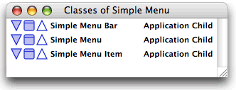
|
For background information, see Classes. |
The Classes window provides functions for working at the class level and lets you access the methods and attributes of each class.
Classes window tasks and relevant information include:
Creating a class
To create a class:
If not already open, open the Classes window of the section in which you want to create a class. For details, see Opening a Classes window.
COMMAND-click in any unoccupied space in the Classes window.
|
|
Alternatively, CONTROL-click (Right-click) in any unoccupied space in the Class Methods window and select the New Class command from the contextual menu. |
This creates a new Class item with the name Untitled Class . The name is selected for editing.
Type a name for the class and press ENTER.
- If there are classes for which you have not overridden the default name, the class is named Untitled Class#1 and large integers are used as necessary to account for multiple classes for which the default name has not been overridden.
|
For restrictions on class names, see About names for classes |
About names for classes
Classes must have names that are unique across a project. Marten will not allow you to name a new class with the same name as that of an an existing class.
Deleting a class
Deleting a class has the following effects:
All attributes inherited from the deleted class are removed from the subclasses.
If an instance of the class or any of its descendants exists, the class cannot be deleted. All such instances must be found and removed before the class can be deleted. To aid in finding these instances, it may help to delete or add an attribute to the class to see what sections are dirtied.
To delete a class:
If not already open, open the Classes window of the section in which you want to delete the class, alias, or shell. For details, see Opening a Classes window.
Creating subclasses; assigning a parent to a class
Subclasses are typically created to make a specialized type of the parent class. A subclass inherits the methods and attributes of its parent class.
|
For detailed background information on subclassing, see Classes. |
Once you have created a class, you can assign it a parent class.
|
|
You cannot designate a parent to a class if the class already has an attribute with the same name as that of the intended parent class. |
To assign a parent class to a class:
If not already open, open the Classes window of the section in which you want to create the subclass. For details, see Opening a Classes window.
Orphaning a child class
You can remove the designated parent of a class to turn the subclass into a stand-alone class with no ancestors.
To remove all ancestors of a class:
If not already open, open the Classes window of the section in which you want to create the inheritance link. For details, see Opening a Classes window.
The Persistents window
This window displays he persistents in a section, provides functions for working with persistents, and provides access to Value window, where ou can edit persistent values.
Persistents in the section file.
|
For background information on persistents, see Persistents. |
Creating a persistent
To create a persistent:
COMMAND-click in any unoccupied space of a Persistents window.
|
|
Alternatively, CONTROL-click (Right-click) in any unoccupied space in the Persistents window and select the New Persistent command from the contextual menu. |
This creates a new Persistent icon with the name Untitled Persistent selected for editing.
Deleting a persistent
To delete a persistent:
If not already open, open the Persistents window of the section in which you want to delete the persistent. For details, see Opening the Persistents window.
Accessing the contents of a persistent
You edit the value of a persistent using the Value window.
To open a value window for a persistent:
Double-click the Persistent icon.
|
For details on editing values in a Value window, see The Value window. |
Simple values that can be represented textually can also be edited directly in the Persistents window. For details, see Selection in general.
The Class Methods window
This window displays the methods of a class, proivides functions for working at the class method level, and provides access to the Case window where you can edit class methods.
Opening the Class Methods window
To open a Class Methods window, use one of the following techniques:
In a Classes window, double-click on a Class Methods icon.
|
For background information on working with classes, see The Classes window. |
Double-click the right side of an Instance operation for an existing class.
|
For background information on Instance operations, see Instance operations. |
Creating a Class method
To create a class method:
COMMAND-click in any unoccupied space of a Class Methods window.
|
|
Alternatively, CONTROL-click (Right-click) in any unoccupied space in the Class Methods window and select the New Method command from the contextual menu. |
This creates a new Method icon with the name Untitled Method . The name is selected for editing.
About names of class methods
When naming class methods, keep in mind that class method names must be unique within the class.
Changing the type of class method
There are four types of class methods:
To change the type of a clas method:
If not already open, open the Class Methods window of the class in which you want to change a method type. For details, see Opening the Class Methods window.
CONTROL-click on the the method to which an execution type is to be assigned, choose Install from the context menu, and then choose the type from the dropdown menu.
|
For background information on method types, see Methods. For information on changing types of methods and operations, see The Operations menu. |
Accessing the contents of a class method
You edit your class methods using Case windows:
|
For background information on cases, see Cases. For details on working with cases of a method, see The Case window. |
The Class Attributes and Instance Attributes windows
In a class in Marten, attributes can be either class attributes, whose values are the same across all instances of the class, or instance attributes, whose values can be different in each instance of the class.
The classes window lets you open a Class Attributes window:
or an Instance Atttributes window:
Both Attribute windows provide the same tasks.
|
For background information on attributes, see Attributes. |
The following topics provide information on the Attributes windows and the tasks you can perform using this editor. They include:
Opening an Attributes window
To open an Attributes window, use one of the following techniques:
In a Classes window, double-click on the Instance Attributes or Class Attributes icon of a class.
|
For information on working with classes, see The Classes window. |
Double-click the left side of an Instance operator for an existing class.
|
For background information on Instance generators, see Instance operations. |
Creating an attribute
To create an attribute:
COMMAND-click in any unoccupied space of an Instance Attributes or Class Attributes window. .
|
|
Alternatively, CONTROL-click (Right-click) in any unoccupied space in the window and select the New Attribute (or New Class Attribute ) command from the contextual menu. |
This creates a new attribute icon with the name Untitled . The name is selected for editing.
Type a name for the attribute and press ENTER.
The attribute is appended to the bottom of the attributes list and is created with a default value of NULL.
|
For information on how to change this value, see Changing the default value of an attribute. |
If you create an attribute in a parent class, it is automatically added to new and existing subclasses and their instances.
Deleting an attribute
You cannot delete Inherited attributes from a subclass. You can only delete non-inherited attributes.
Reordering attributes
In general, reordering attributes in an Attributes window has no effect on an application, however all instances in the project will have their attributes reordered which will dirty the appropriate sections. You must save those sections or upon reopening such a section, the attributes of the instances will have incorrect values. You can reorder by dragging attribute icons up or down in the list. However, note the following restrictions:
Clipboard functions on attributes
You can cut, copy, paste, or duplicate a selected attribute.
|
For details, see The Edit menu. |
Changing the default value of an attribute
You use the Value window to change the value window of an attribute.
To open a value window for an attribute:
Double-click the Attribute icon.
|
For details on editing values in a Value window, see The Value window. |
Values that can be represented textually can also be edited directly in a Attribute window. Like names of Marten elements, these values are stored in an edit text box. Clicking on a textual attribute value activates the edit text box, selecting all text in the value. A subsequent click places an insertion point at the position of the click. Standard text editing keys and clipboard commands are available.
The Case window
A Case window displays a single case of a method. Each case of a method is a dataflow diagram, representing one of the ways that data can flow through a method.
|
For more detailed information on method cases, see Cases. |
In addition to standard Marten caption components, the window caption consists of a case indicator and the method name. The case indicator is always in the form n : m , where m is the total number of cases that make up the method and n is the sequence number of the case displayed in the current window. If the method is a class method, the method name is always in the form classname / methodname .
The case window also has a case dock that provides access to cases of a method. For details on using these items, see Using cases.
The following sections document Case windows tasks and provide relevant information. They include:
Opening a Case window
You can open the first case of a method using method icons in a Universal Methods window, Class Methods window, or a Case window.
To access a method and open its first Case window:
Double-click the method icon.
|
For information on other actions that open Case windows and navigate among cases of a method, see Effect of opening operations by double-clicking and Using cases. |
Using operations in a Case window
An operation provides the lowest level of execution in Marten. They are used to call methods and primitives and to access the values of attributes and persistents. Controls are added to operations to provide control flow in a Marten application.
|
For detailed information on operations, see Operations. |
The Case windows tasks for working with operations include:
Creating an operation
To create an operation in a case window:
COMMAND-click in unoccupied space.
|
|
Alternatively, CONTROL-click (Right-click) in any unoccupied space in the Case window and select the New Operation command from the contextual menu. |
A simple operation item is displayed with the cursor placed in the editable text box, allowing you to enter the name of the operation.
Naming an operation
To rename the operation:
Click once on the text area of the icon to make it editable, type over the old name and press RETURN.
If Marten recognizes the provided name as that of primitive, method, external procedure, or class instance, in the current project, it adjust the arity appropriately.
|
For more information on arity, see Terminals and roots. |
Deleting an operation
Changing the type of an operation
You can change the type of an operation by changing its name or by annotating it with an item from the Operations or Controls menus.
|
For details on the types of operations available in Marten, see Types of operations. For details on the relationship between the user-provided name of an operation and its type, see Operation names. |
Effect of opening operations by double-clicking
The effect of double-clicking either side of an operation in the bordering non-text area depends on the type of operation, the kind of method reference made by the name, and in the case of an instance operation, the side on which the click occurs.
Generally, if the operation references an existing element, such as a defined method or a Marten primitive, double-clicking either side opens an appropriate window or dialog. Otherwise, double-clicking the left side or the right side issues a warning indicating that the referenced element does not exist and prompts you to create it.
Specifically, the results of double-clicking on the sides of operations, according to the name and type of the operation, are as follows:
|
|
It should be understood in the following that the empty string is a valid name and is treated as such. |
Method name
If no universal method called name already exists, a dialog prompts you to create the universal method. Selecting Yes results in a dialog prompting for a section for the new universal method. On selecting a section, the universal method is created and a Case window for the first case of the newly created universal method opens.
Otherwise, if a universal method called name exists, a Case window for the first case of the universal method opens.
Method / name
If multiple classes have a method name, you are prompted to choose from a list of those classes. On selecting a class, a Case window for the first case of the selected class method opens.
Otherwise, if a single class has a method name, a Case window for the first case of the class method opens.
If no class has such a method OR if the COMMAND key is held down, a dialog prompts you to create the class method. Choosing Yes prompts you to choose a class in which to create the method. On selecting a class, the class method is created and a Case window for the first case of the newly created class method opens.
Method // name
If the class containing the method in which the context-driven method operation is located has a method called name, the first case window of this method is opened.
Otherwise, a dialog prompts you to create the class method. Choosing Yes creates the class method created and opens a Case window on the first case of the newly created class method.
Method class / name
If the class class exists and has a method name, the first Case window of this method opens.
Otherwise, a dialog prompts you to create the class method.
- If Yes is selected, and the class class exists, the class method is created and a Case window for the first case of the newly created class method opens.
- If Yes is selected, and the class class DOES NOT exist, a dialog prompts you to create the class. You are then prompted to select the section for the new class, and the class is created. Then the class method is created and a Case window for the first case of the newly created class method opens.
Persistent name
If the persistent name exists, its containing Persistents window opens.
Otherwise, if the persistent name does not exist, a dialog prompts you to create the persistent. Choosing Yes prompts you to select the section for the new persistent and creates the persistent.
Instance name
If the class name exists, and the click was on the left side, its Attributes window is opened. If the click was on the right side, its Methods window is opened.
Otherwise, if the class name does not exist, a dialog prompts you to create the class. Choosing Yes prompts you to select the section for the new class and creates the class.
Get or Set name or / name
Opens a dialog with a scrolling list of all classes which have an attribute name. On selecting a class, a Attributes window for the selected class opens, displaying the attribute and its default value.
If no class has such an attribute OR if the COMMAND key is held down, a dialog prompts you to create the attribute. Choosing Yes prompts you to select from a scrolling list of all classes that do not have an attribute name. On selecting a class, dialogs are displayed (for specifying whether the attribute is to be a class or an instance attribute, and for setting its default value) as for runtime creation of attributes.
Working with roots and terminals
Roots and terminals provide the means to pass data into operations and for returning data from operations. The following sections provide information on working with roots and terminals in a Case window:
Creating roots and terminals
Operations have target areas above and below where roots and terminals can be created.
Setting the arity of an operation
When you first create and name an operation, Marten automatically assigns the default arity of the operation.
|
For information on how Marten does this, see Operation names. |
If an operation is transformed to one with lesser arity, superfluous terminals and roots are deleted from right to the left. If an operation is transformed to one with greater arity, the additional terminals and roots are added to the right.
Operation transformation by name change
Changing an operation's name to that of an External Procedure automatically sets the correct arity. For details on External Procedures, refer to the Marten Primitives Reference .
Changing the name of an operation to that of a user-defined method, enforces arity in one of two ways:
If the name of the operation is a universal reference (it has no slash, as in myMethod ), context-determined reference ( //myMethod ), or an explicit class method reference ( myClass/myMethod ), the method called by the operation can be identified exactly and its arity determines that of the operation.
|
For details on types of method references, see Operation names. |
Dragging operations, roots and terminals
When an operation, the input bar, or output bar is dragged, its terminals and roots move with it. In addition, you cannot drag the roots of Constants or the terminals of Match operations.
About resizing operations
Operations CANNOT be resized except by dragging roots and terminals or by selecting the Resize Operations command. This command forces the operations to resize to an optimal size.
Changing the type of root or terminal
You can change the type of roots and terminals to provide for list-processing or to act as an inject control.
To change the type of annotation on a root or terminal:
Click the root or terminal and choose a type from the Controls menu.
|
For details on the annotations available, see The Controls menu. |
Connecting operations
Operations can be connected in two ways:
Synchro links control the sequence in which operations are executed.
|
For detailed background information, see Connecting operations. |
The following sections provide information on working with datalinks and synchros. They include:
Creating or deleting a datalink
A datalink passes data between the output root of one operation and the input terminal of another operation.
To create a datalink from a root of one operation to a terminal on another operation:
Holding the OPTION key down, move the cursor (without clicking) to the terminal to which you wish to connect the root.
When the terminal changes color, click the mouse. If a datalink already existed between the root and terminal, the datalink will be deleted.
Creating or deleting a synchro link
A synchro connecting two operations, dictates the order in which they will execute. In the following example, if operation A is selected, OPTION-clicking operation B creates a synchro between the two operations.
Operation A will always execute before operation B , but this does not necessarily mean that A will execute immediately before B .
To delete a synchro, repeat the steps followed to create it.
|
|
Unlike datalinks, when creating a synchro, direction and selection order of the operations is critical. The operation selected first is forced to be executed before the operation selected second. |
Shortcuts for creating and connecting operations
Creating a root (or terminal) and datalink
If a root (or terminal) on one operation is selected, OPTION-COMMAND-clicking near the top (or bottom) of another operation creates a terminal (or root) and a datalink connecting it with the selected root (or terminal).
Creating an operation, root or terminal, and a datalink
If a root (or terminal) on one operation is selected, OTION-COMMAND-clicking in unocupied space creates an operation with a terminal (or root) and connecting datalink.
Creating an operation and a synchro link
If an operation is selected, OPTION-COMMAND-clicking in unoccupied space creates a new operation and a synchro from the original operation to the new one.
Creating constant and match operations
Double-clicking a terminal creates a new constant operation with a single root, connected by a datalink to the terminal.
Double-clicking a root creates a new Match operation with a single terminal, connected by a datalink to the root.
COMMAND-double-clicking near the top (or bottom) of an operation, but away from existing terminals (or roots), creates a new terminal (or root), with an attached Constant (or Match) operation connected by a datalink.
Straightening datalinks
Using controls
Controls provide control flow in a Marten application. They allow you to:
Specify the tests and conditions under which these actions are taken.
The following sections document the use of controls in a Case window. The specific tasks are:
Deleting a control from an operation.
|
For background information on controls, see Controls. Controls are applied to operations, roots, and terminals using menu commands. For details on those menu commands, see The Controls menu. |
Adding a control to an operation
To add a Next Case, Continue, Terminate, Finish or Fail control to an operation:
Select the operation and from the Controls menu choose the appropriate menu command.
The appropriate control is added to the operation, with an X inside it to indicate that the activation condition is `on Failure'.
|
For information on activation conditions, see Success, failure, and error. For information on how to change the activation condition, see Changing the activation condition on a control. |
Changing the control on an operation
To change the control on an operation
Select the operation and from the Controls menu choose the preferred menu command.
The activation condition `on Success' or `on Failure' of the original control is retained in the new one.
|
For information on how to change the activation condition, see Changing the activation condition on a control. |
Changing the activation condition on a control
The Controls menu's Reverse command toggles the activation condition on a control between Success and Failure.
|
For background information on activation conditions, see Success, failure, and error. |
Using locals
You can group a collection of operations into a Local to help alleviate complicated cases or cases with large numbers of operations. A Local is a single operation that represents a collection of operations, executes that collection as if they were a single method, and provides access to those operations.
The following sections provide instructions and background information for working with locals. They include:
Viewing the contents of a local.
|
For detailed information on locals, see Locals. |
Creating a local
What happens when a local is created
Datalinks and synchros inside the Local are preserved. Any synchros that connected operations within the group with operations outside the group are removed.
Any inputs from operations outside the local operation to operations inside the Local are routed through input terminals on the Local icon. Any outputs from operations inside the group that are to be inputs to operations outside the local operation are routed through output roots on the Local.
Corresponding arity in locals
Correspondence between the terminals of a Local operation and the roots of the input bars of the cases of its corresponding Local method is enforced. The same applies to correspondence between the roots of a Local operation and the terminals on the output bars of the cases of its Local method.
Clipboard functions on operations
Standard clipboard functions can be applied to operations by selecting the operation and choosing the appropriate Edit menu command. Details are provided in the following sections:
Cutting Operations.
Input and output bars, roots, and terminals cannot be copied, cut, pasted, or duplicated when selected individually (i.e. not part of a method or operation respectively).
Copying Operations
If more than one operation is selected, the group of selected operations and all datalinks and synchros within the group to be copied into the Object clipboard.
If a single operation is selected, the operation and its roots and terminals are copied to the clipboard but not any connected datalinks or synchro links. If the operation is a Local, its cases are also copied.
Pasting Operations
An operation or operations that have been copied to the Object clipboard can be pasted into a case window.
Using cases
The following sections provide information working with method cases. They include:
Accessing the contents of a case.
|
For background information on cases, see Cases. |
The Case dock
The Case window has a Case dock, by default placed on the left side of the Case window.
|
For information on how to change the position of the Case dock, see Preferences. |
The Case dock lets you display the different cases of a method, select cases for operations such as deleting, and reorder the cases of a method.
Creating a new case
To create a new case in a method:
COMMAND+click in the Case dock just below or above an existing icon (or just to the right or left of, if the Case dock is positioned at the bottom of the Case window) depending on where you want the case to appear in the method's sequence of cases.
For example, to create a new second case for a three case method, you would click between the two existing case icons.
Double-clicking the icon for the new case opens the case window for the new case. The new case is automatically assigned the correct arity according to the first case.
Deleting a case
When a case icon is deleted, the remaining icons are renumbered to account for the deletion.
Reordering cases
Clipboard functions on cases
You can use the Cut , Copy , Paste , Delete , and Duplicate menu commands against selected case icons. This is particularly useful for deleting cases or making a copy of case to be used in another method.
The Value window
The Value window displays values of simple and complex Marten data. It lets you create and edit values, and enables navigation through the structures of complex values, such as objects and lists.
The Value window consists of a control area at the top of the window and a value panel. The value panel displays the current value and can contain simple data such as numbers and strings or complex data such as lists and instances. The control area has the following items:
Opening a Value window
To open a Value window, use one of the following techniques:
Double-click one of the following:
- A Persistent in a Persistents window or a Persistent operation in a Case window
- An attribute in either an Instance Attributes window, a Class Attributes window, or a Class Instance Value window
- An element of a list displayed in iconic mode in a List Value window
- An executed root or terminal, at runtime in step mode in a Debug window.
Closing a chain of Value windows
When you close a Value Window that has other Value windows that were opened from it, the other Value windows are closed first in the manner that the original or root Value window is closed. For example, imagine a Value window is open for an instance and a "sub" Value window is open for an attribute of that instance. Clicking the OK button for the Instance Value window causes the attribute Value window to be closed first, as if its OK button had been clicked. This updates the value of the attribute in the Instance Value window. Then the Instance Value window is closed and the edited instance is updated with the new updated value of the attribute and any other modifications that were made.
If the Close button was clicked in the situation described above, the attribute Value window is closed as if its Close button was clicked and then the Instance Value window is closed without any modification to the original instance.
Data types in the Value window
The Type list in the Value window control area displays the datatype of the value shown in the value panel. This can range from basic Marten datatypes such as numbers and strings to complex types such as lists and instances of classes.
The Type menu lets you look up and select from all available types.
Above the line in the popup is a list of Marten basic datatypes. Below the gray line is a list of classes currently defined in the Marten environment.
Selecting a new type from the popup, creates an object with the default value for that type and displays it in the value panel.
View options in the Value window
The View popup menu is used to specify display of data and numbers. Data can be displayed textually or iconically. The types of views (Text or Iconic) are described in detail next.
The View popup menu provides the following options:
Text views
Any simple data (of type boolean, integer, none,null, real, or string) can be displayed as text.
- A list containing an instance of a class will display the object as a bracketed name (cf: ( <Simple Button> <Simple Edit Text> ) ). Be vary careful in this situation because if this text is edited or changed, the List Value window will interpret the text as defining a list of strings (i.e. ( "<Simple" "Button>" "<Simple" "Edit" "Text>" ) ). All editing of a list containing instances should be done in the iconic view of the List Value window.
All the normal text editing operations apply to text views of data.
Iconic view
This view displays either a list or an object as a sequence of icons, with the icons representing either elements of the list or attributes of the object.
The icons take the form of vertically arranged circles. When a list is viewed, each icon has to the right of it a number denoting its position in the list, and to the right of that its value. When an object is viewed, the Value window essentially displays the object's attributes window.
Viewing A List:
Any kind of list, whether it contains class instances or not, can be displayed iconically. Each circular icon represents an element of the list.
Icons can be dragged within the value panel to change their positions in the list. COMMAND-clicking creates a new icon.
List element values that are represented textually can be edited in the Value window, by selecting the value's text and using standard text editing operations.
To edit elements containing instances, lists, or values that are too long to be fully displayed on one line, double-click the list element icon to open another Value window for it. The new Value window is offset just below its immediate parent's Value window.
Viewing An Instance:
An instance can only be displayed iconically. The display in the Value window is similar to the Attributes window for a class but you can only edit values of attributes. You cannot create, delete, rename, or reorder attributes in the Value window.
Attribute values that are represented textually can be edited directly in the Value window, by selecting the value's text and using standard text editing operations.
To edit attributes containing instances, lists or values that are too long to be fully displayed on one line, double-click the attribute icon to open another Value window for it. The new Value window is offset just below its immediate parent's Value window.
Clipboard functions on values
Text
All standard clipboard operations (Copy, Cut, Paste, Duplicate) are available when editing text in a Value window.
Icons
When a List Value window displays a list iconically, the icons may be selected by either clicking on the icons (the SHIFT key may be used to perform multiple selections) or dragging out a marquee rectangle that intersects the icons. Once a selection has been made, the selected list may be copied to the clipboard by performing a COMMAND-C or issuing the Copy command from the Edit menu.
This selection may be pasted into any List Value window and the selected list will be appended to the list already displayed.
When a Class Instance (Object) Value window displays the attributes iconically, the icons may be selected by either by clicking on the icons (the SHIFT key may be used to perform multiple selections) or dragging out a marquee rectangle that intersects the icons. Once a selection has been made, the selected attributes may be copied to the clipboard by performing a COMMAND-C or issuing the Copy command from the Edit menu.
This selection may be pasted into any Class Instance Value Window that has the exact same matching attributes (number, name, and order). In contrast to the pasting of a list, the pasted attributes will overwrite the currently displayed ones.
 Index
Index
Normal run mode 66
A
About Marten menu command 55
changing 109
introduced 29
addition 24
AND 24
changing on root/terminal 105
introduced 28
menu commands 68
operations 101
API calls 25
application file 9
and locals 112
and operation name change 104
described 19
Evaluate operations 24
Get operations 22
Instance operations 21
Persistent operations 21
Set operations 23
setting 104
Arrange in Front menu command 75
automatic deletion 88
changing default value 98
clipboard functions 98
creating 97
default values 21
deleting 97
deletion restriction 97
described 13
instance vs. class 13
naming restriction 13
naming restrictions 97
propagaing values to descrndants 62
reordering 97
returning value of 22
searching for definitions 53
Attributes menu command 73
described 95
tasks performed in 96
C
C language 25
creating a case 115
deleting cases 115
described 114
reordering cases 115
described 98
opening 99
tasks performed in 99
accessing contents 116
clipboard functions 115
contents 18
control flow 17
creating 115
deleting 115
described 17
input/output 18
navigating 114
output on termination 31
proceeding to next 30
reordering 115
terminiating current 31
testing to continue 30
working with 114
automatic deletion 88
changing default value 98
clipboard functions 98
creating 97
default values 21
deleting 97
deletion restriction 97
described 13
naming restriction 13
reordering 97
returning value of 22
searching for definitions 53
described 95
opening 96
Class Attributes menu command 74
tasks performed in 96
accessing contents 95
calling from parent 23
changing type of 95
converting from Locals 66
creating 94
deleting 94
described 15
icon 12
naming and reference types 26
naming restrictions 94
searching for definition 53
types 15
described 93
opening 94
tasks performed in 93
accessing methods/attributes 90
changing sections 62
contents 11
creating 88
creating instances 21
creating subclasses 89
deleting 88
icon, described 12
naming restrictions 88
propagating attribute values 62
searching for definition 53
Classes menu command 73
described 87
tasks performed in 87
Clear menu command 61
cases 115
on attributes 98
operations 113
Close menu command 58
Constant menu command 64
and terminal/root dragging 104
creating 64
described 20
inject restrictions 32
searching for 52
double-clicking, effect of 102
changing method to 95
introduced 15
adding to an operation 71
described 30
Continue menu command 71
creating 70
creating 70
control flow, introduced 29
Control menu command 69
adding to operations 108
changing activation condition 109
changing type of 109
deleting 109
described 29
icons 29
Inject 32
working with 108
Controls menu 68
Copy menu command 61
Cut menu command 61
D
in Value windows 118
data-determined reference 26
creating/deleting 107
described 27
multiple from root 27
shortcuts for creating 107
Debug run mode 66
default attribute values 21
definitions, searching for 53
changing method to 95
introduced 15
dirty sections 43
division 24
double-clicking effect, operations 101
Duplicate menu command 62
E
changing method to 95
introduced 15
closing 48
opening 45
types of 77
Evaluate menu command 66
arity 24
creating 66
described 24
double-clicking, effect of 102
searching for 52
exclusive OR 24
explicit reference 26
exponentiation 24
searching for 52
External Constant menu command 64
creating 64
introduced 25
searching for 52
double-clicking, effect of 103
when loaded 37
External Get Field menu command 65
creating 65
searching for 52
double-clicking, effect of 103
External Gets 26
External Global menu command 65
External Global operations 25
creating 65
searching for 52
double-clicking, effect of 103
External Match operations 25
searching for 52
described 25
inject restrictions 32
External Procedur menu command 64
searching for 52
described 25
double-clicking, effect of 103
External Set Field menu command 65
creating 65
searching for 52
double-clicking, effect of 103
External Sets 26
double-clicking, effect of 103
F
adding to an operation 71
and List annotations 28
and Loop annotations 29
and Repeat annotation 29
described 32
working with 108
Fail menu command 71
failure, operations 29
File menu 58
section, when created 82
Find menu command 62
adding to an operation 71
and List annotations 28
and Loop annotations 29
and Repeat annotation 29
described 31
working with 108
Finish menu command 71
not searched for sections 38
seach trees 37
search order 38
suggested structure 38
FOR loops 29
G
Get menu command 65
arity 22
creating 65
described 22
naming and reference types 22
searching for 52
double-clicking, effect of 103
I
Class methods 12
controls 29
Instance attributes 12
instance attributes 13
libraries 10
Repeat annotation 29
resources 10
section 10
selecting multiple 50
Info Window menu command 71
converting method to 95
creating 65
creating 69
described 32
operation restrictions 32
introduced 18
automatic deletion 88
changing default value 98
clipboard functions 98
deleting 97
deletion restriction 97
described 13
naming restriction 14
reordering 97
returning value of 22
searching for definitions 53
described 95
opening 96
tasks performed in 96
Instance menu command 65
arity 21
creating 65
described 21
searching for 52
attribute setting methods 21
creating 21
creating with Initialization method 21
double-clicking, effect of 102
setting attribute values 23
integer division 24
Run Mode 66
L
langauge overview 9
access to 10
icon 10
appying to root/terminal 69
creating 69
described 28
List menu command 69
parallel processing of 28
testing 21
Local menu command 66
Local to Method menu command 66
double-clicking, effect of 102
arity considerations 112
automatic deletion of 101
converting to method 66
creation details 111
described 24
inject restrictions 32
searching for 52
viewing contents 112
working with 109
applying to root/terminal 69
described 29
Loop menu command 69
looping 28
M
Match menu command 64
and terminal/root dragging 104
creating 64
described 21
inject restrictions 32
searching for 52
double-clicking, effect of 102
mathematical expressions 24
Controls 68
Edit 60
File 58
Operations 63
System 55
Tools 75
Windows 71
Method menu command 63
cases 16
described 14
double-clicking, effect of 101
naming and reference types 26
types 14
Universal 16
Methods menu command 73
modulus 24
Move To Section menu command 62
applying 68
described 28
multiplication 24
N
and operation type change 104
class/alias/shell restrictions 88
restrictions, attributes 97
restrictions, class methods 94
restrictions, class-related 88
selecting 48
New Projects Window menu command 58
adding to an operation 70
described 30
Next Case menu command 70
NOT 24
O
Open menu command 58
opening operations 101
adding controls to 108
changing control type 109
clipboard operations 113
connecting 105
connecting with datalinks 105
connecting with synchros 106
control activation condition 109
controls 29
creating 100
deleting 101
described 18
double-clicking effect 101
dragging 104
execution sequence 26
Multiplex 28
name/type change 104
naming 100
naming effects 26
passing data between 27
resizing 105
setting arity 104
types 19
Operations menu 63
Operations to Local menu command 66
OR 24
introduced 18
P
Page Setup... menu command 60
parentheses, folder names 38
Paste menu command 61
Persistent menu command 64
arity 21
accessing contents 92
changes across Interpreter executions 93
changing operations to 21
deleting 92
described 34
double-clicking, effect of 102
moving sections 62
naming restrictions 92
searching for 52
searching for definitions 53
setting value 21
Persistents menu command 73
described 91
tasks performed in 91
Preferences menu command 56
Primitive menu command 64
double-clicking, effect of 102
searching for 52
when loaded 37
adding sections 43
adding sections to 83
associated files 9
class/alias/shell name restrictions 88
creating 41
described 9
folders not searched 38
opening 42
reverting to saved 59
saving 44
search path, components 37
search tree folders 37
sections storage suggestions 38
Propagate Attribute menu command 62
Q
Quit Marten menu command 58
R
Redo menu command 61
Remember menu command 74
creating 69
described 29
icon 29
termination of 29
applying to operations 69
Repeat menu command 69
creating 69
repeat-until loops 29
Reset Operations menu command 68
Resize Operations menu command 68
access to 10
icon 10
Restore menu command 74
Reverse menu command 70
Revert menu command 59
and operation arity change 104
changing type of 105
creating 103
deleting 104
described 19
dragging 104
list annotation 28
Loop annotation, creating 69
multiple datalinks 27
simple, creating 68
Run Mode menu command 66
S
Save As menu command 59
search tree folders 37
access to 10
adding to a project 83
adding to project 43
as organizational tool 9
described 9
dirty 43
disk file correspondence 9
folder details 37
folder search order 38
icon 10
renaming 84
reverting to saved 59
saving 43
search path 37
storage suggestions 38
types of contents 11
when created 43
when file created 82
Sections menu command 73
Select All menu command 62
deselection and insertion point 49
icons 49
introduced 48
multiple icons 50
section names restriction 49
text 49
toggling icon/text 49
sequence of execution 26
Set menu command 65
creating 65
described 23
naming and reference types 23
searching for 52
double-clicking, effect of 103
shift operations 24
Show... menu command 58
Simple menu command 68
creating 68
described 20
searching for 52
creating 68
single-inheritance 9
Skipped run mode 66
Stack menu command 74
opening 74
static values 20
testing 21
creating in other sections 89
subtraction 24
success, operations 29
Super menu command 69
creating 69
described 23
calling methods in 23
creating/deleting 106
described 27
System menu 55
T
and operation arity change 104
changing type of 105
described 19
dragging 104
inject creating 69
List annotation, creating 69
Loop annotation, creating 69
simple, creating 68
adding to an operation 71
and List annotations 28
and Loop annotations 29
and Repeat annotation 29
described 31
Terminate menu command 71
introduced 9
changing method to 95
introduced 16
Tools menu 75
Touch command 43
in Value windows 118
U
Undo menu command 61
converting from Locals 66
creating 85
deleting 86
described 16
moving sections 62
naming restriction 16
opening cases 87
renaming 86
searching for definition 53
Universal Methods menu command 73
described 84
tasks performed in 85
universal reference 26
Untouch command 43
Update menu command 60
V
closing 117
closing chain of 117
data types in 118
described 116
opening 117
tasks performed in 117
view options 118
constant 20
testing 21
X
XOR 24